Import Packages#
import numpy as np
import pandas as pd
import cv2
import os
import matplotlib.pyplot as plt
import seaborn as sns
import random
import tensorflow as tf
import matplotlib.pyplot as plt
from tensorflow.keras.layers import Flatten, Conv2D, Activation, Dense, Dropout, MaxPooling2D
from tensorflow.keras.models import Sequential
from PIL import Image
2023-06-07 13:13:01.775232: W tensorflow/stream_executor/platform/default/dso_loader.cc:64] Could not load dynamic library 'libcudart.so.11.0'; dlerror: libcudart.so.11.0: cannot open shared object file: No such file or directory; LD_LIBRARY_PATH: /home/danosis/anaconda3/lib/python3.9/site-packages/cv2/../../lib64:
2023-06-07 13:13:01.775248: I tensorflow/stream_executor/cuda/cudart_stub.cc:29] Ignore above cudart dlerror if you do not have a GPU set up on your machine.
train_folder = 'chest_xray/train'
test_folder = 'chest_xray/test'
labels = ["NORMAL", "PNEUMONIA"]
# resize image
IMG_SIZE = 256
def get_data_train(data_dir):
data = []
for label in labels:
path = os.path.join(data_dir, label)
class_num = labels.index(label)
for img in os.listdir(path):
try:
img_array = cv2.imread(os.path.join(path, img), cv2.IMREAD_GRAYSCALE)
new_array = cv2.resize(img_array, (IMG_SIZE, IMG_SIZE))
data.append([new_array, class_num])
except Exception as e:
print(e)
return np.array(data)
train = get_data_train(train_folder)
test = get_data_train(test_folder)
---------------------------------------------------------------------------
FileNotFoundError Traceback (most recent call last)
/tmp/ipykernel_67167/2470347292.py in <module>
----> 1 train = get_data_train(train_folder)
2 test = get_data_train(test_folder)
/tmp/ipykernel_67167/881923197.py in get_data_train(data_dir)
9 path = os.path.join(data_dir, label)
10 class_num = labels.index(label)
---> 11 for img in os.listdir(path):
12 try:
13 img_array = cv2.imread(os.path.join(path, img), cv2.IMREAD_GRAYSCALE)
FileNotFoundError: [Errno 2] No such file or directory: 'chest_xray/train/NORMAL'
l = []
for i in train:
if(i[1] == 0):
l.append("Normal")
else:
l.append("Pneumonia")
sns.countplot(l)
/Users/jscheufe/Desktop/anaconda3/lib/python3.9/site-packages/seaborn/_decorators.py:36: FutureWarning: Pass the following variable as a keyword arg: x. From version 0.12, the only valid positional argument will be `data`, and passing other arguments without an explicit keyword will result in an error or misinterpretation.
warnings.warn(
<AxesSubplot:ylabel='count'>
X_train = []
y_train = []
X_test = []
y_test = []
for feature, label in train:
X_train.append(feature)
y_train.append(label)
for feature, label in test:
X_test.append(feature)
y_test.append(label)
Noramalize#
X_train = np.array(X_train) / 255.0
X_test = np.array(X_test) / 255.0
X_test.shape
(624, 256, 256)
Reshape#
X_train = X_train.reshape(-1, IMG_SIZE, IMG_SIZE, 1)
y_train = np.array(y_train)
X_test = X_test.reshape(-1, IMG_SIZE, IMG_SIZE, 1)
y_test = np.array(y_test)
from sklearn.model_selection import train_test_split
X_train, X_val, y_train, y_val = train_test_split(X_train, y_train, test_size=0.33, random_state=42)
Model Training#
model = Sequential()
model.add(Conv2D(32, (3, 3), padding="same", input_shape=X_train.shape[1:]))
model.add(Activation("relu"))
model.add(MaxPooling2D(2, 2))
model.add(Dropout(0.2))
model.add(Conv2D(64, (3, 3), padding="same"))
model.add(Activation("relu"))
model.add(MaxPooling2D(2, 2))
model.add(Dropout(0.5))
model.add(Conv2D(128, (3, 3), padding="same"))
model.add(Activation("relu"))
model.add(MaxPooling2D(2, 2))
model.add(Dropout(0.2))
model.add(Conv2D(256, (3, 3), padding="same"))
model.add(Activation("relu"))
model.add(MaxPooling2D(2, 2))
model.add(Dropout(0.2))
model.add(Flatten())
model.add(Dense(256, activation="relu"))
model.add(Dense(1))
model.add(Activation("sigmoid"))
callback = tf.keras.callbacks.EarlyStopping(monitor='loss', patience=3)
opt = tf.keras.optimizers.Adam(learning_rate=1e-5)
model.compile(loss="binary_crossentropy", optimizer=opt, metrics=["accuracy"])
history = model.fit(X_train, y_train, epochs=50, validation_data=(X_val, y_val), shuffle=True, callbacks=[callback])
scores = model.evaluate(X_test, y_test)
model.save("cnn_model.bin")
Epoch 1/50
110/110 [==============================] - 313s 3s/step - loss: 0.4904 - accuracy: 0.7743 - val_loss: 0.5703 - val_accuracy: 0.7389
Epoch 2/50
110/110 [==============================] - 309s 3s/step - loss: 0.3041 - accuracy: 0.8830 - val_loss: 0.4759 - val_accuracy: 0.8969
Epoch 3/50
110/110 [==============================] - 302s 3s/step - loss: 0.2152 - accuracy: 0.9184 - val_loss: 0.3892 - val_accuracy: 0.9120
Epoch 4/50
110/110 [==============================] - 390s 4s/step - loss: 0.1751 - accuracy: 0.9295 - val_loss: 0.3364 - val_accuracy: 0.9114
Epoch 5/50
110/110 [==============================] - 299s 3s/step - loss: 0.1664 - accuracy: 0.9358 - val_loss: 0.3282 - val_accuracy: 0.9253
Epoch 6/50
110/110 [==============================] - 301s 3s/step - loss: 0.1425 - accuracy: 0.9486 - val_loss: 0.3014 - val_accuracy: 0.9317
Epoch 7/50
110/110 [==============================] - 300s 3s/step - loss: 0.1369 - accuracy: 0.9475 - val_loss: 0.3175 - val_accuracy: 0.9218
Epoch 8/50
110/110 [==============================] - 300s 3s/step - loss: 0.1329 - accuracy: 0.9421 - val_loss: 0.2746 - val_accuracy: 0.9392
Epoch 9/50
110/110 [==============================] - 300s 3s/step - loss: 0.1309 - accuracy: 0.9495 - val_loss: 0.2667 - val_accuracy: 0.9398
Epoch 10/50
110/110 [==============================] - 300s 3s/step - loss: 0.1254 - accuracy: 0.9495 - val_loss: 0.2607 - val_accuracy: 0.9438
Epoch 11/50
110/110 [==============================] - 306s 3s/step - loss: 0.1457 - accuracy: 0.9415 - val_loss: 0.2614 - val_accuracy: 0.9444
Epoch 12/50
110/110 [==============================] - 301s 3s/step - loss: 0.1228 - accuracy: 0.9509 - val_loss: 0.2919 - val_accuracy: 0.9213
Epoch 13/50
110/110 [==============================] - 300s 3s/step - loss: 0.1159 - accuracy: 0.9589 - val_loss: 0.2554 - val_accuracy: 0.9380
Epoch 14/50
110/110 [==============================] - 299s 3s/step - loss: 0.1141 - accuracy: 0.9552 - val_loss: 0.2755 - val_accuracy: 0.9288
Epoch 15/50
110/110 [==============================] - 299s 3s/step - loss: 0.1136 - accuracy: 0.9546 - val_loss: 0.2532 - val_accuracy: 0.9380
Epoch 16/50
110/110 [==============================] - 302s 3s/step - loss: 0.1061 - accuracy: 0.9592 - val_loss: 0.2456 - val_accuracy: 0.9392
Epoch 17/50
110/110 [==============================] - 300s 3s/step - loss: 0.1331 - accuracy: 0.9509 - val_loss: 0.2456 - val_accuracy: 0.9392
Epoch 18/50
110/110 [==============================] - 300s 3s/step - loss: 0.1072 - accuracy: 0.9606 - val_loss: 0.2248 - val_accuracy: 0.9340
Epoch 19/50
110/110 [==============================] - 301s 3s/step - loss: 0.1082 - accuracy: 0.9569 - val_loss: 0.2252 - val_accuracy: 0.9299
20/20 [==============================] - 13s 635ms/step - loss: 0.5137 - accuracy: 0.7324
WARNING:absl:Found untraced functions such as _jit_compiled_convolution_op, _jit_compiled_convolution_op, _jit_compiled_convolution_op, _jit_compiled_convolution_op while saving (showing 4 of 4). These functions will not be directly callable after loading.
INFO:tensorflow:Assets written to: cnn_model.bin/assets
INFO:tensorflow:Assets written to: cnn_model.bin/assets
Evaluation#
print("Test loss {}".format(scores[0]))
print("Test accuracy {}".format(scores[1]))
Test loss 0.5136862397193909
Test accuracy 0.7323718070983887
accuracy = history.history['accuracy']
val_accuracy = history.history['val_accuracy']
loss = history.history['loss']
val_loss = history.history['val_loss']
epochs = range(len(accuracy))
plt.plot(epochs, accuracy, "b", label="trainning accuracy")
plt.plot(epochs, val_accuracy, "r", label="validation accuracy")
plt.legend()
plt.show()
plt.plot(epochs, loss, "b", label="trainning loss")
plt.plot(epochs, val_loss, "r", label="validation loss")
plt.legend()
plt.show()
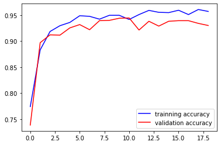
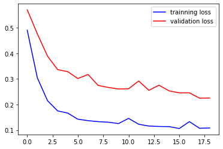
prediction = model.predict(X_test)
prediction[:15]
20/20 [==============================] - 16s 805ms/step
array([[0.6264642 ],
[0.22692832],
[0.5031447 ],
[0.5104077 ],
[0.93623334],
[0.59360707],
[0.41981283],
[0.54494756],
[0.7715268 ],
[0.3040676 ],
[0.72501427],
[0.72483677],
[0.16107036],
[0.25881165],
[0.38995466]], dtype=float32)
preds = pd.DataFrame(prediction).reset_index()
preds = preds.rename(columns={0:'pred'})
preds['binary_pred'] = np.where(preds['pred'] > 0.5, 1, 0)
preds['true'] = y_test
preds
| index | pred | binary_pred | true | |
|---|---|---|---|---|
| 0 | 0 | 0.626464 | 1 | 0 |
| 1 | 1 | 0.226928 | 0 | 0 |
| 2 | 2 | 0.503145 | 1 | 0 |
| 3 | 3 | 0.510408 | 1 | 0 |
| 4 | 4 | 0.936233 | 1 | 0 |
| ... | ... | ... | ... | ... |
| 619 | 619 | 0.978642 | 1 | 1 |
| 620 | 620 | 0.978889 | 1 | 1 |
| 621 | 621 | 0.978620 | 1 | 1 |
| 622 | 622 | 0.953505 | 1 | 1 |
| 623 | 623 | 0.972743 | 1 | 1 |
624 rows 4 columns
correct = preds[preds['binary_pred'] == preds['true']]
incorrect = preds[preds['binary_pred'] != preds['true']]
correct_pneumonia = correct[correct['true'] == 1]
correct_normal = correct[correct['true'] == 0]
incorrect_pneumonia = incorrect[incorrect['true'] == 1]
incorrect_normal = incorrect[incorrect['true'] == 0]
df = correct_pneumonia
for i in pd.Series(range(0,5)):
label = 'PNEUMONIA'
if df['true'].iloc[i] == 0:
label = 'NORMAL'
plt.imshow(X_test[df['index'].iloc[i]].reshape(256,256), cmap="gray", interpolation='none')
plt.title("Predicted Class {}, Actual Class {}".format(label, label))
plt.show()
j += 1
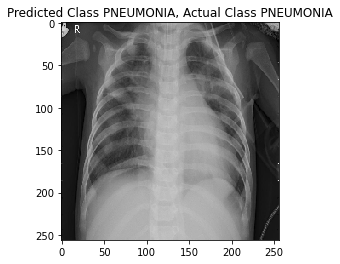
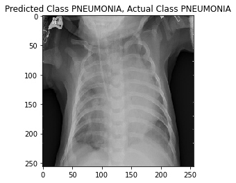
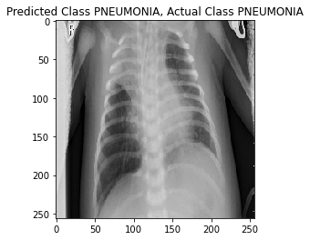
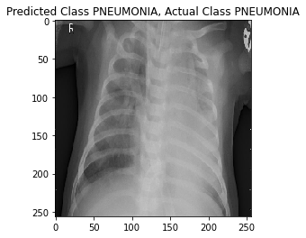
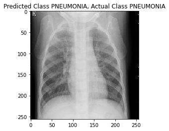
df = correct_normal
for i in pd.Series(range(0,5)):
label = 'PNEUMONIA'
if df['true'].iloc[i] == 0:
label = 'NORMAL'
plt.imshow(X_test[df['index'].iloc[i]].reshape(256,256), cmap="gray", interpolation='none')
plt.title("Predicted Class {}, Actual Class {}".format(label, label))
plt.show()
j += 1
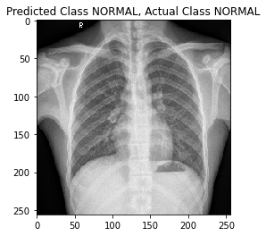
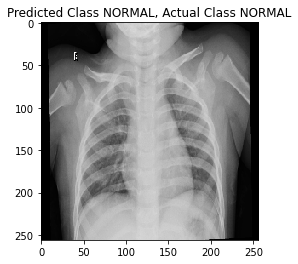
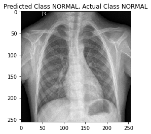
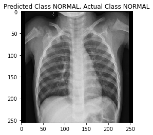
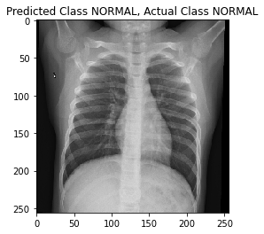
df = incorrect_pneumonia
for i in pd.Series(range(0,5)):
true_label = 'PNEUMONIA'
pred_label = 'NORMAL'
if df['true'].iloc[i] == 0:
true_label = 'NORMAL'
pred_label = 'PNEUMONIA'
plt.imshow(X_test[df['index'].iloc[i]].reshape(256,256), cmap="gray", interpolation='none')
plt.title("Predicted Class {}, Actual Class {}".format(true_label, pred_label))
plt.show()
j += 1
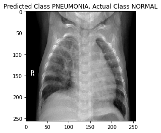
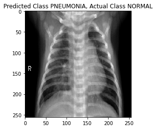
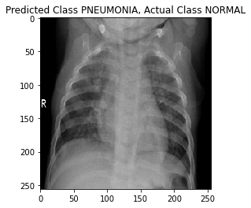
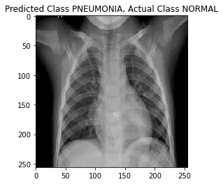
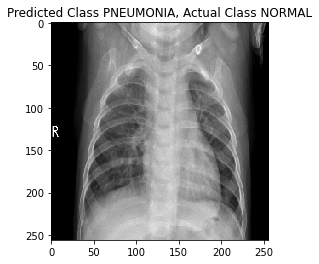
df = incorrect_normal
for i in pd.Series(range(0,5)):
true_label = 'PNEUMONIA'
pred_label = 'NORMAL'
if df['true'].iloc[i] == 0:
true_label = 'NORMAL'
pred_label = 'PNEUMONIA'
plt.imshow(X_test[df['index'].iloc[i]].reshape(256,256), cmap="gray", interpolation='none')
plt.title("Predicted Class {}, Actual Class {}".format(true_label, pred_label))
plt.show()
j += 1
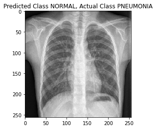
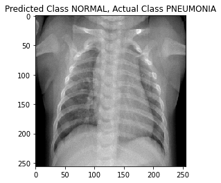
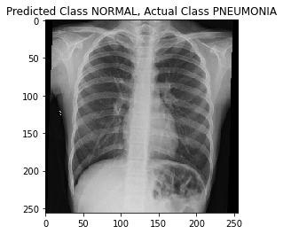
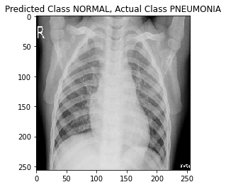
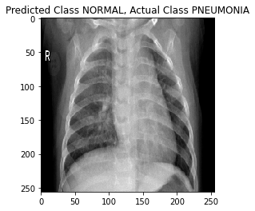
Deployment#
labels = ["NORMAL", "PNEUMONIA"]
def prepare(filepath):
img_array = cv2.imread(filepath, cv2.IMREAD_GRAYSCALE)
new_array = cv2.resize(img_array, (IMG_SIZE, IMG_SIZE))
return new_array.reshape(-1, IMG_SIZE, IMG_SIZE, 1)
model = tf.keras.models.load_model("cnn_model.bin")
# extra pneumonia photo from google
prediction = model.predict([prepare("google_pneumonia_xray_image.png")])
print(labels[int(prediction[0])])
1/1 [==============================] - 0s 143ms/step
PNEUMONIA
# extra normal x-ray photo from google
prediction = model.predict([prepare("google_normal_xray_image2.png")])
print(labels[int(prediction[0])])
1/1 [==============================] - 0s 54ms/step
NORMAL